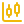

PROFESSIONAL CRYPTO TERMINAL
Ваш ринок.
Ваші правила.
Ваше рішення — першочергове. VSV не замінює ваше мислення, а лише підтверджує власний торговий задум фактами ринку. Незалежність думки, дисципліна й відповідальність за кожен вибір — це справжній шлях до зрілості трейдера та зростання капіталу. Якщо ж ви шукаєте бота, який думатиме замість вас, або гарантоване збагачення без власної роботи — не реєструйтеся.
Реєстрація через Telegram · без email і складних форм
🛡 Адміністратор ще не відкрив вам розділи кабінету. Зверніться до адміністратора бота.
VSV SIGNALS — радар волатильності
Інструменти з підвищеною ймовірністю імпульсного руху (volatility expansion). Бот відбирає монети з обох сканерів «Пружини» — WATCHLIST бота і скану всієї біржі — у фазі стиснення волатильності (squeeze): ціна торгується у вузькому діапазоні, ATR у нижніх перцентилях, обсяг висихає. Так виглядає накопичення ліквідності перед виходом із діапазону (range breakout). Показуються монети з найвищим VSV Score.
- VSV Score — композитна оцінка готовності до імпульсу 0–100: заряд 45% · тривалість стиснення 15% · низька волатильність 15% · висихання обсягу 10% · підтвердження VSV·AI 15%. Клас A ≥ 80 · B ≥ 65 · C — нижче.
- Заряд — енергія стиснення «Пружини»: TTM-squeeze, перцентиль ATR, звуження 24-год діапазону проти 96-год, висихання обсягу. Δ — зміна від моменту потрапляння в список.
- Стиснення — скільки годин поспіль смуги Боллінджера всередині каналу Кельтнера (TTM squeeze).
- Волатильність — перцентиль поточного ATR у власній історії монети: низький = енергія ще не витрачена.
- Обсяг — поточний обсяг до середнього: < 1 — ліквідність висихає перед рухом, > 1.5 — учасники вже активні.
- Амплітуда — орієнтовний хід за принципом measured move (висота діапазону) у будь-який бік.
- Імпульс — вихід із діапазону вже почався: доцільніше чекати ретест рівня, ніж наздоганяти ціну.
- VSV·AI — штучний інтелект бота бачить по монеті сформований сетап (послідовність реакцій обсягу).
Ймовірний напрямок — як рахується
Бот зводить у один бік докази, які він уже рахує по монеті: натяг «Пружини» (у який бік стиснення накручене сильніше) · order flow 6 год (поглинання, кульмінації, перехоплення ініціативи — аномалії обсягу) · сетап VSV·AI · рух ціни за 24 год (слабкий контекст). Число біля напрямку — впевненість моделі (50–92%): наскільки одностайні ці докази.
Чому напрямок не є 100% вірним і кінцевим
- Ринок — імовірнісне середовище. Вихід зі стиснення (squeeze) можливий в обидва боки; зведення доказів лише зміщує шанси на вашу користь (edge), а не визначає результат угоди.
- Хибні пробої і збір ліквідності (liquidity sweep, stop hunt): перед справжнім рухом ціна часто знімає стопи з протилежного боку діапазону — це виглядає як рух «проти прогнозу».
- Напрямок живий і може змінитися. Order flow і натяг перераховуються постійно: великий учасник, новини, каскад ліквідацій чи рух BTC змінюють картину — тоді бот розвертає напрямок і ставить позначку 🔄 «був LONG / SHORT».
- Нестаціонарність. Модель спирається на поведінку ринку в минулому; ринкові режими змінюються, тож минула статистика не гарантує майбутньої.
- Конфлікт доказів. Коли джерела суперечать одне одному, бот показує ⚖ «не визначено», а не вгадує.
Точність — наскільки напрямок відповідає дійсності
Кожен показаний напрямок бот перевіряє ринком: прогноз спрацював, якщо протягом 24 год ціна пройшла +поріг у бік прогнозу раніше, ніж −поріг проти (поріг — половина амплітуди, від 1 до 4%). Точність = частка таких випадків серед перевірених. Поріг однаковий в обидва боки, тож 50% — це рівень випадкового вгадування: усе, що вище, — фактична перевага напрямку. Показник рахується за кошиком впевненості рядка (від 10 випадків) або загалом (від 20); до того — «збираємо дані».
⚠ Ймовірний напрямок — інформація для уваги, а не торгова рекомендація. Вхід — лише після власного підтвердження (пробій з обсягом, структура CHoCH/BOS, ретест рівня) і з вашим ризик-менеджментом.
| Монета | Ймовірний напрямок | VSV Score | Заряд | Стиснення | Волатильність | Обсяг | Амплітуда | Фаза · коментар |
|---|---|---|---|---|---|---|---|---|
| Завантаження… | ||||||||
Відкриті тестові угоди 0
| Монета | Бік | Вхід | Зараз | PnL | Ціль | Стан | Manual SL | TP-1 | TP-2 | Таймер |
|---|---|---|---|---|---|---|---|---|---|---|
| — | ||||||||||
Останні закриті тестові угоди 0▸
| Закрито | Монета | Бік | Вхід | Вихід | PnL | Пік | Причина |
|---|